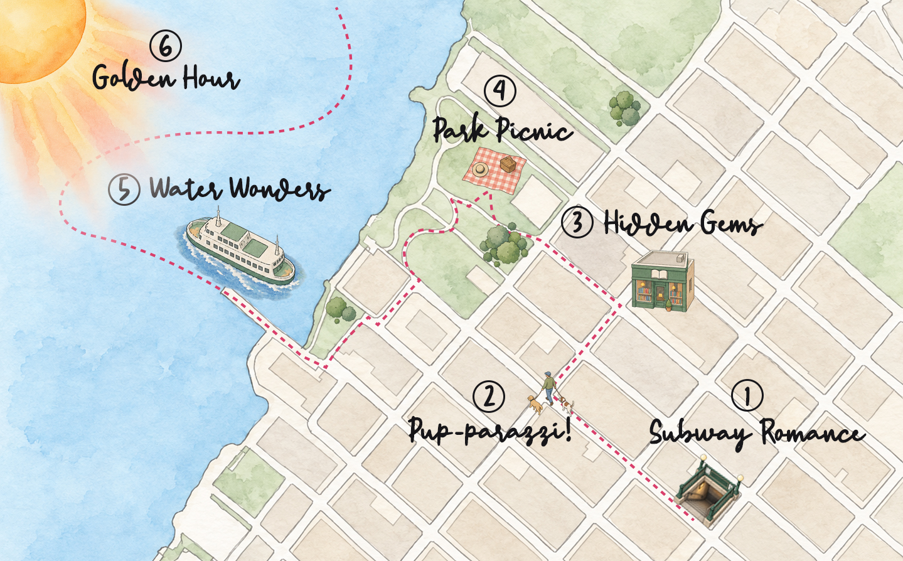

Gameplay
Real life set the pace, not the game.
24 of the 25 quests were open from the start, with no prescribed route or pace. People could choose what fit that day, bring whoever happened to be around, and knock out several quests in one outing if the stars, subway schedule, and group chat happened to align. The finale quest was the exception: it stayed locked behind a secret code and was saved for the birthday gathering as one designed moment of discovery.
The Adventure Board became home base: enough structure to see what was possible, choose something, and move on. Completion worked on an honor system rather than GPS checks or proof-heavy verification. For a casual game between friends, the friction of policing participation mattered more than the risk of someone bending the rules.
I gave up control over the path so the game could fit around real life instead of dictating it.
